Chapitre 2 : Le DevOps
Le DevOps
La démarche DevOps, comme on peut la comprendre dans la littérature trouve ses limites dans des projets microservices complexes.
Imaginons que nous avons un nouveau projet d'application basé sur une architecture microservice plutôt complexe. Ce projet souhaite avoir une démarche Full DevOps.
Info
J'utilise régulièrement le terme Full DevOps pour indiquer qu'il n'y a aucun livrable du projet qui ne soit pas intégré entièrement dans la démarche DevOps. Cela inclus donc les démarches GitOps, DevSecOps, Dev{andMore}Ops, MLOps, DataOps, xOps, ...
Note
Dans la suite de cet article, je vais utiliser régulièrement le terme de composant pour représenter l'ensemble des éléments à déployer (infrastructure, microservices, ...).
Nous définissons les règles suivantes :
- L’infrastructure, le code, la documentation : Tout doit être déployé automatiquement => Full DevOps
- En cas de souci lors du déploiement d’un composant, ceux dépendants doivent être bloqués.
- Ne déployer en UAT que ce qui a été validé en DEV.
- Ne déployer en PROD que ce qui a été validé en UAT.
- Utiliser le branching model Trunk-Based Development.
L’infrastructure, le code, la documentation : Tout doit être déployé automatiquement.
Comme je suis un "fana." d'Azure, on va imaginer que notre projet de microservices doit être déployé sur des services managés Azure. Il faudra donc déployer cette infrastructure pour pouvoir ensuite déployer nos microservices. Notre équipe produisant aussi de la documentation (spécifications, schéma d'architecture, ...), on souhaite avoir une démarche DevOps pour mettre à jour notre documentation sur un portail.
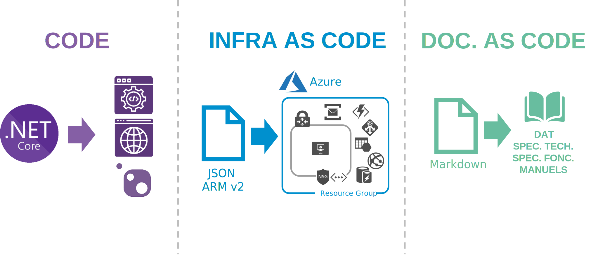
Pour arriver à cette fin nous allons nous appuyer sur les repository git.
- Notre infrastructure sera décrite en InfraAsCode avec Terraform, Bicep ou ARM json.
- Le code de nos librairies sera réparti dans des repository en fonction de son utilisation. Il n'est pas pertinent de mettre dans un repository à part le code d'une librairie qui n'est destinée qu'à un seul microservice.
- Le code de nos microservices (application web, batch, services, ...) sera réparti dans des repository.
Dans chacun de ces repository nous aurons le code (InfraAsCode ou code "classique"), mais aussi la documentation décrite en DocAsCode avec Markdown, AsciiDoc ou reStructuredText.
Enfin pour chaque repository nous allons mettre en place un pipeline de CI/CD afin d'automatiser la compilation, la validation et le déploiement à chaque commit.
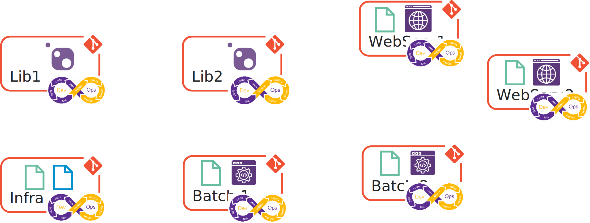
Note
Je ne parle pas ici de PipelineAsCode. Cette pratique que je recommande fortement dans la démarche DevOps permet de décrire le fonctionnement de notre pipeline de CI/CD. Personnellement, je conseille de n'avoir qu'un seul pipeline par repository et que celui-ci soit déposé à la racine. Cela permet de rapidement comprendre ce qui va être déclenché lors d'un commit-push sans avoir la mauvaise surprise d'avoir déclenché un pipeline non désiré.
Jusqu'ici, tout va bien.
Les dépendances
Le premier souci que l'on peut rencontrer se trouve au niveau du build. En effet, une librairie créée dans le cadre d'un projet et pensée pour être utilisée par plusieurs microservices ou par d'autres librairies aura son propre repository. Ce qui implique que des microservices et des librairies peuvent dépendre de librairies. On ne pourra pas compiler un microservice si les librairies qui sont utilisées par celui-ci ne sont pas disponibles.
C'est ce que j'appelle : la dépendance de compilation.
Example
- La Lib2 utilise la Lib1,
- Le Batch1 utilise la Lib1,
- Les WebService1, WebService2 et Batch2 utilisent la Lib2 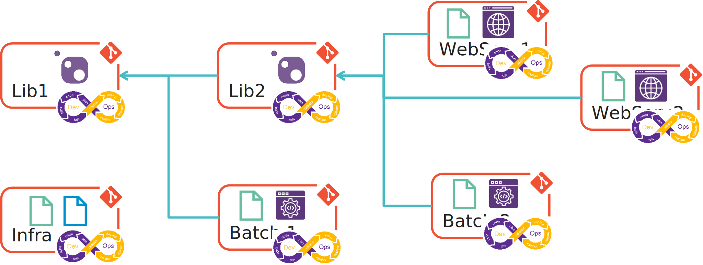
Afin de garantir la robustesse de la solution, je veux m'assurer qu'une évolution sur une librairie ne va pas provoquer une régression sur les librairies et les microservices qui dépendent d'elle. Dans les pipelines de mes microservices je vais donc mettre en place un trigger sur le succès du build de ma librairie.
Example
La Lib2 est mise à jour. Les WebService1, WebService2 et Batch2 qui utilisent la Lib2 doivent être recompilés et testés afin de vérifier la non-régression. 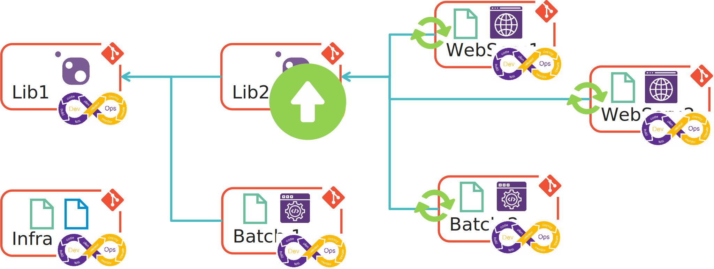
Le second souci que l'on peut rencontrer se trouve au niveau du déploiement. En effet, pour déployer un microservice il parait évident que son infrastructure doit être déployé avant. Il peut aussi être nécessaire qu'un autre microservice soit déployé pour qu'un microservice soit opérationnel (dans le cas des workflows par exemple).
C'est ce que j'appelle : la dépendance de déploiement.
Example
- Les batchs et les webservices nécessitent que l'infrastructure soit déployée.
- Le WebService2 pour fonctionner nécessite que le WebService1 soit déployé. 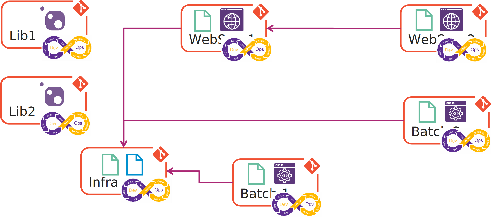
Encore une fois, afin de garantir la robustesse de la solution, je veux m'assurer que s'il y a un souci lors de déploiement d'un composant, que l'ensemble des composants qui en dépendent et qui nécessites d'être déployés ne le soient pas.
Example
Le déploiement du WebService1 est en erreur, le WebService2 qui nécessite d'être déployé doit être bloqué. 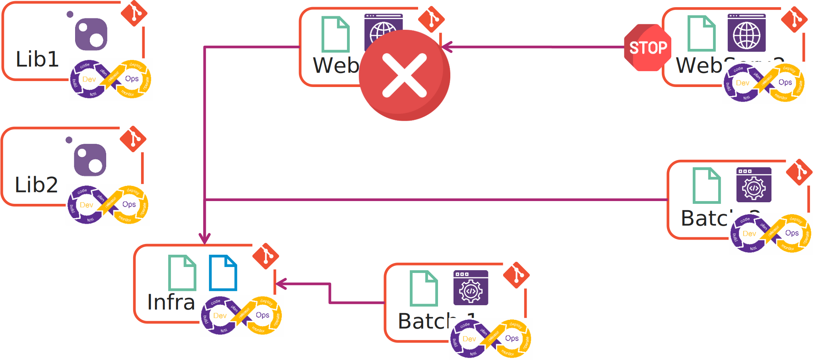
Le cycle de mise en production
J'aime à penser que les créateurs du logo DevOps, le fameux symbole infini ou le 8 allongé n'ont pas choisi ce logo de façon anodine. En effet, ils auraient pu choisir un cercle. Mais non...
La boucle de rejet
La boucle de rejet consiste à rejeter tous développements réalisés qui ne correspondent pas aux standards de qualité définis par l'équipe. Ce qui veut dire qu'à la sortie de la phase Test de notre boucle DevOps, en cas d'échec, il faut passer directement à la phase Plan pour corriger l'anomalie.
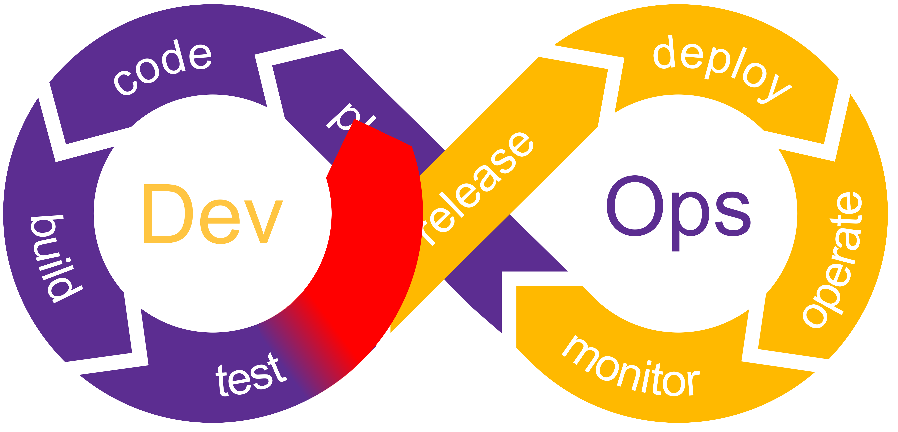
La boucle de succès
La boucle de succès consiste à déployer sur l'environnement suivant le composant validé sur l'environnement actuel. Ce qui implique qu'à la sortie de la phase Monitor de notre boucle DevOps en cas de succès (les tests d'intégration, de performance ou fonctionnel sont concluant), on peut passer directement à la phase Deploy pour procéder au déploiement du composant sur l'environnement suivant.
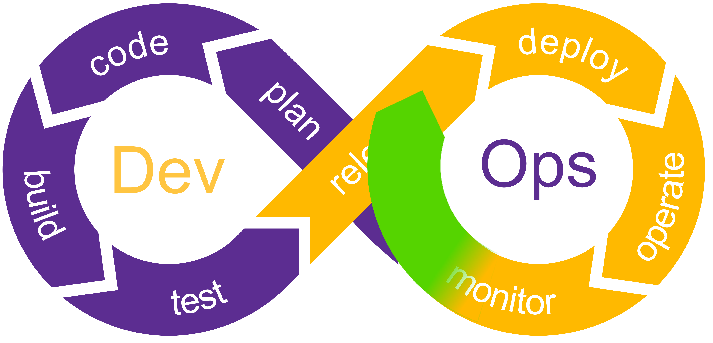
Ne déployer que ce qui a été validé
Reprenons notre cycle Agile avec les différentes phases de validation sur les environnements d'intégration puis de recette métier.
- Pendant le sprint, chaque UserStory sera déployé sur l'environnement d'intégration (DEV) afin de valider en continue les tests d'intégration.
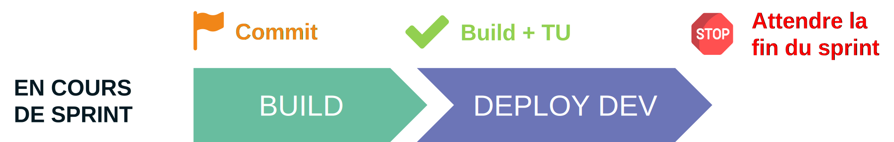
- En fin de sprint, à la suite de la démo. et de la validation des UserStory, les développements sont déployés sur l'environnement de recette métier (UAT).
- A la fin de la recette métier, les développements sont déployés sur l'environnement de production.
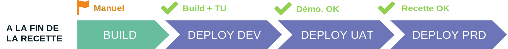
On constate ainsi que l'on ne déploie que ce qui a été validé sans pour autant repasser par les phases Plan, Code, Build et Test. On utilise "la boucle de succès".
Note
L'utilisation de feature flag nous permettra dans certain cas d'éviter un déploiement, mais ce n'est pas pour autant qu'il n'y aura pas de phase dans notre pipeline. Il faudra prévoir à la place du déploiement l'activation ou la désactivation de telle ou telle feature.
Le Trunk-Based Development
Le Trunk-Based Development est un branching model git très plébiscité dans la communauté DevOps. Il a l'intérêt d'être simple à gérer grâce à son unique branche de développement et compatible avec le maintien opérationnel de plusieurs versions techniques d'un composant, du fait de ses branches de release.
Note
Les branches de feature sont autorisées mais doivent être très courtes dans le temps.
Dans le cadre de notre cycle Agile, à la fin de chaque sprint, nous allons tirer une branche de release pour chacune des librairies et chacun des composants qui ont évolué durant le sprint et qui ont été validés durant la démo.
Rappel des règles Agile du chapitre 1
- Les itérations ont une durée de 3 semaines,
- La recette fonctionnelle doit être faite par une équipe métier indépendante de l'équipe de réalisation,
- Les tests d’intégration sont inclus dans le Definition Of Done de l’équipe de réalisation,
- Les délais doivent être réduits au maximum.
Ces branches de release vont contenir le code "sanctuarisé". Le code contenu dans ces branches a passé l'intégralité des tests, des mesures de qualités et de sécurité imposés par l'équipe. Le code est stable.
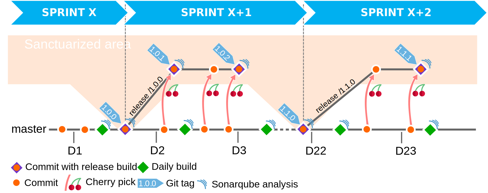
C'est depuis la branche master, main ou trunk contenant le code en cours de développement que nos déploiements sur l'environnement d'intégration (DEV) seront réalisés. Comme ce qui est en cours de développement est potentiellement instable, nous devons empêcher que ce qui est produit sur cette branche puisse être déployé sur les environnements de recette métier ou de production.
Et c'est depuis les branches de release que le code qui a été préalablement validé (qualité, sécurité, fiabilité, intégrité, maintenabilité, ...) et dit stable va pouvoir être déployé sur les environnements de recette métier (UAT), puis de production. Si durant la recette métier (ou pire, en production), nous constatons une anomalie, celle-ci pourra être corrigée avec un Hotfix en utilisant des cherry-pick. Et pour garantir que ce qui est déployé en production est toujours fiable, à chaque fois, le composant doit être déployé et testé auparavant sur les environnements d'intégration, puis de recette métier.
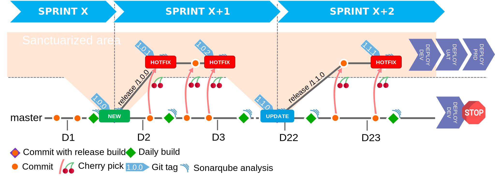
Nous devons appliquer cette méthodologie pour chaque repository (et donc chaque composant) de notre solution.
En résumé
Les dépendances de compilations ou de déploiement, le cycle de mise en production et le branching model sont des facteurs clés de la mise en place d'une démarche DevOps. Il est très important lors de l'initialisation de votre projet de bien cadrer ces éléments qui peuvent parfois être très complexes à réajuster en cours de route.
Nous verrons dans le prochain chapitre un sujet que j'affectionne tout particulièrement : "L'entropie des systèmes". Et nous verrons que la démarche DevOps n'échappe pas à la formule de Boltzmann.
Références
Remerciements
- Samy Mameri : pour la relecture
- Oussama Mouchrit : pour la relecture
- Michael Maillot : pour la relecture
Rédigé par Philippe MORISSEAU, Publié le 13 Octobre 2021